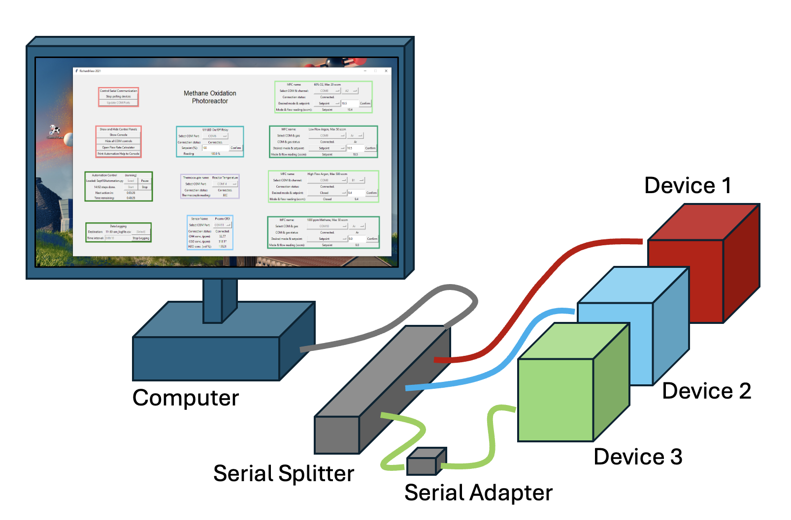

Overview
Introduction
‘’PyOpticon’’’ is a package that creates graphical user interfaces that control, automate, and log data from physical devices via serial connections. It was originally developed for use in a laboratory setting with devices like valves, mass flow controllers, and spectrometers, though it will work well with many other devices that can communicate with a serial connection. Our goal is to enable graduate students and other researchers with basic Python knowledge to quickly equip experimental setups with data acquisition and automated control, allowing higher-quality and higher-throughput experimentation. See the Gallery tab for some examples. Here’s a little cartoon of the kind of system we envision:
The graphical user interfaces are called Dashboards and consist of many elements called Widgets that represent a physical device or a group of functions. Existing dashboards can be operated like desktop applications, without any coding knowledge, once they are created. Writing automation scripts, configuring new dashboards from existing widgets, and defining new widgets require as little coding as we could manage.
Check out the ‘capabilities’ tab for a little more info on what this package can do.
Caveats
Great caution should be used when controlling, and especially when automating, any set of physical devices, especially when using a student-developed software package with a short track record. Anyone who uses PyOpticon does so at their own risk, as the software may be unreliable or filled with bugs.
In particular, always ensure that it’s IMPOSSIBLE for a combination of software-generated commands to generate a condition that is dangerous to people or to equipment(!!!). Do so through the design of the physical setup or through hardware interlocks. For instance, don’t allow this software to control gas flows that could, if given improper inputs, generate a combustible mixture. Don’t trust the software, automation scripts, luck, etc. to prevent such a dangerous condition.
History
This package was written by Richard Randall at Stanford University between 2021 and 2024. It began as an internal tool for Prof. Arun Majumdar’s lab in Methanical Engineering, and was later packaged for others to use. Its Alpha version was posted online in April 2024.
Requirements
PyOpticon was developed using Python 3.10, but it probably works with lots of other versions.
It works best on Windows. Macs work fine for offline development using serial emulators (see Tutorial), but we haven’t tested controlling real serial devices on a Mac, nor have we tested anything on Linux.
PyOpticon also requires the numpy and pyserial packages, both available using pip.
Installation
This package can be installed using pip, as follows:
python -m pip install pyopticon
However, since we are still in a very early stage of development, situations may arise where a bug arises and it’s helpful to just email me (the author) and have me quickly email back a fix to one of the source files, to later be incorporated in a future version. To make that possible, rather than installing via pip, you can download the source code (the ‘pyopticon’ file in ‘src’) from github and place the ‘pyopticon’ folder in the same directory where you plan to put the dashboard initialization .py file. This is what I recommend for very early adopters.
Older Versions
We’ll cross that bridge when we come to it, but older versions (once they exist) should be available through PyPI.